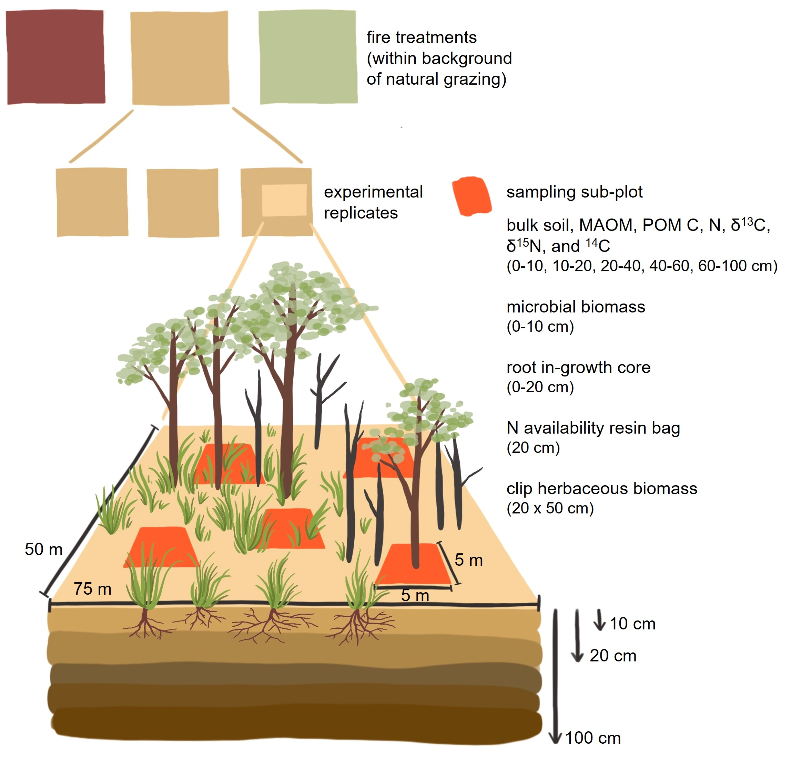
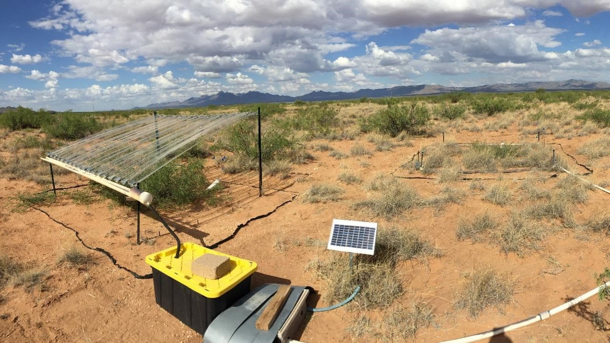
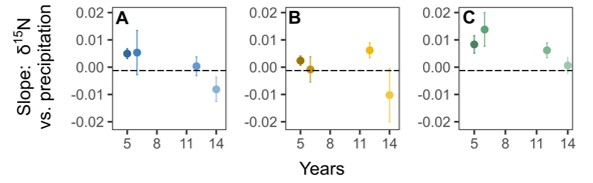

I am an ecologist investigating how novel climate and disturbance regimes — such as prolonged drought or altered fire regimes — alter dryland ecosystem structure and function and feed back to global carbon and nitrogen cycles. I combine long-term rainfall, fire, and herbivory experiments with biogeochemical and isotopic tools to uncover mechanisms that govern carbon and nitrogen dynamics. My work primarily focuses on grass-dominated ecosystems, where climate and disturbance strongly influence variability in the global carbon cycle, but I also extend these questions across an herbaceous–woody gradient.
Three main questions drive my research:
1. What controls organic matter inputs to ecosystems?
2. What regulates carbon and nitrogen transformations?
3. What is the storage and persistence of carbon and nitrogen in soils?

Current Projects
Disturbance x climate controls on soil carbon
Grassland and savanna topsoils store as much carbon as the living plant biomass in forests globally, yet the persistence of this carbon remains poorly understood. Soil organic carbon (SOC) exists in two main pools: particulate organic carbon (POC), derived from recent plant litter, and mineral-associated organic carbon (MAOC), considered long-term carbon stabilized via microbial processing and binding to mineral surfaces. Interestingly, fire effects on SOC are highly variable and do not always result in carbon loss. This raises the question: How do land-use change, climate, and ecosystem characteristics interact to control carbon storage and persistence in grassland soils?
We investigate how fire frequency, grazing intensity, and precipitation shape soil carbon storage and long-term persistence in grassland ecosystems. Our work leverages a network of 7 field sites in North America and South Africa with long-term fire manipulation experiments.

This work is funded by the UKRI and ERC (lead PI: Dr. Adam Pellegrini, Stanford University).
Acclimation of biogeochemical cycles to climate extremes
Climate change drivers elicit ecosystem responses that vary through time and across space. We propose that the mismatch between equilibrium and transient ecosystem responses defines ecological acclimation. As precipitation is expected to shift under climate change, we asked how both increases and decreases in water availability elicit ecological acclimation of the nitrogen cycle and how long does this acclimation take.
Using foliar δ15N as a proxy for N cycling processes, we found that the slope of foliar δ15N versus mean annual precipitation decreases across continents. However, within a desert grassland, slopes of interannual foliar and soil δ15N increased with precipitation amount. Using precipitation manipulation field experiments at the Jornada Basin LTER (NM, USA), we then assessed trends in foliar and soil δ15N as duration of the precipitation manipulation increased, from 5 to 14 years. When parsed temporally, the δ15N-precipitation slopes showed initially increasing trends that decreased after 14 years of precipitation manipulation. The difference in directionality of spatial δ15N-precipitation slope compared to within-site, experimental δ15N-precipitation slopes revealed potential acclimation of the N cycle. Furthermore, we estimated rates of ecological acclimation—defined as convergence time for within-site δ15N-precipitation slopes to match the global model—to range from 11 to 18 years.
We conclude N cycling is changing with precipitation amount and duration of the altered precipitation regime. We hypothesize that fast and slow ecological mechanisms—such as microbial processes and shifts in plant species dominance, respectively—explain ecological acclimation of N cycling responses to climate change. As a result, space-for-time substitutions must be interpreted with caution when forecasting future responses to climate change.
Publication forthcoming.


This paragraph is slightly bigger.
Slopes of the relationships between δ15N and precipitation versus time (in years) since the onset of the directional rainfall manipulation. The black dashed line represents the global slope of δ15N versus mean annual precipitation. Points represent slopes ± standard error of N availability versus precipitation amount for A) the plant community, B) the dominant grass (Bouteloua eriopoda), and C) the dominant shrub (Neltuma glandulosa).This work is funded by the NSF (lead PI: Dr. Osvaldo Sala, Arizona State Unviersity).
Mechanistic microbial feedbacks to C and N cycling
Microbes mediate the conversion of organic matter into long-term carbon storage while releasing nutrients, like nitrogen (N), that regulate plant productivity. Yet bulk soil nitrogen pools mask the complexity of microbial transformations, and we still lack a clear understanding of how these processes shape ecosystem responses to global change especially in dry, grass-dominated ecosystems.
Grassland productivity and phenology responses to global change
I measure vegetation community shifts, phenology, and productivity along gradients of dryness.